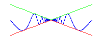
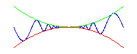
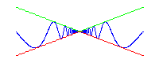
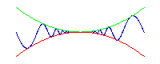

Autumn 2010
Math 151: Sections 501-3 Day-to-Day summaries
- Thursday, 7 October
- I'll pass back the tests today. Average for our class was 62.25.
Here are the scores:
100 96 96 94 94 94 94 93 92 92 91 88 87 85 84 83 80 80 80
79 79 78 78 78 77 77 76 76 75 75 73 73 73 71 71 71 70 70 70
69 68 68 65 65 65 64 63 62 62 60 60 59 58 58 57 56 56 55 55 55
54 54 52 52 52 52 51 51 49 48 47 45 45 44 44 42 41 41 40 40
36 36 36 34 30 30 30 30 27 26 11
- Tuesday, 5 October
- We did Sections 3.5 Derivatives of trigonometric functions, and the Chain Rule.
We are now caught up.
- Thursday, 23 September
- Our exam is Thursday 30 September in HECC 204 from 7:30-9:30 PM.
Purchase a pack of scantron forms #815 and bring to class on Wednesday or Thursday.
- Check out the
past exams for studying!
- Web assign due dates will be moved back to Wednesday 29
September 1:55 PM.
- We nearly caught up, stopping in the middle of Section
3.2 on Derivatives.
- Tuesday, 21 September
- MatLab homework is to be handed in at the START
of Monday recitation class.
- We covered Section 2.6 on limits at, and to infinity.
Too much time was spent on examples, and we are now one day behind the class schedule.
- Thursday, 16 September
- Reminder: Test Thursday 30 September, up to Section 3.2.
- Completed limit laws and most of continuity, Section 2.5.
- Some pictures to ponder:
 



- Tuesday, 14 September
- Covered basic limits, Section 2.3.
- Test I coming up Thursday 30 September.
- Thursday, 9 September
- Covered distance of a point to a line
- Also, parametric curves (Section 1.3), and
- The problem of tangent lines (Section 2.1)
- Do not miss Amy Austin's
videos.
- Tuesday, 7 September
- Help Sessions: Su,Tu,W,Th, 8-10 PM Blocker 166
Mondays 8-10 PM ENPH.
- Covered almost all of Section 1.2.
- Thursday, 2 September
- Tuesday, 31 August
- Get started on eHomework.
Begin here.
- Quick, rough review of trigonometry. For more try
Week-in-Review.
Last modified: Tue Sept 21 08:22:07 CDT 2010